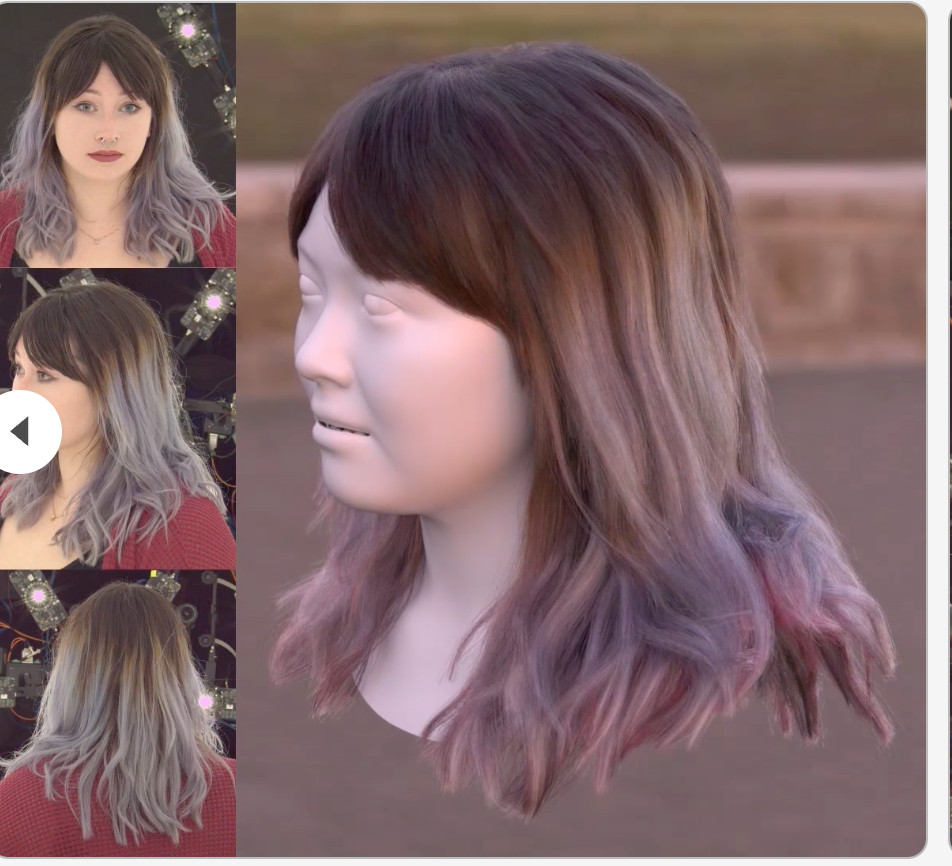
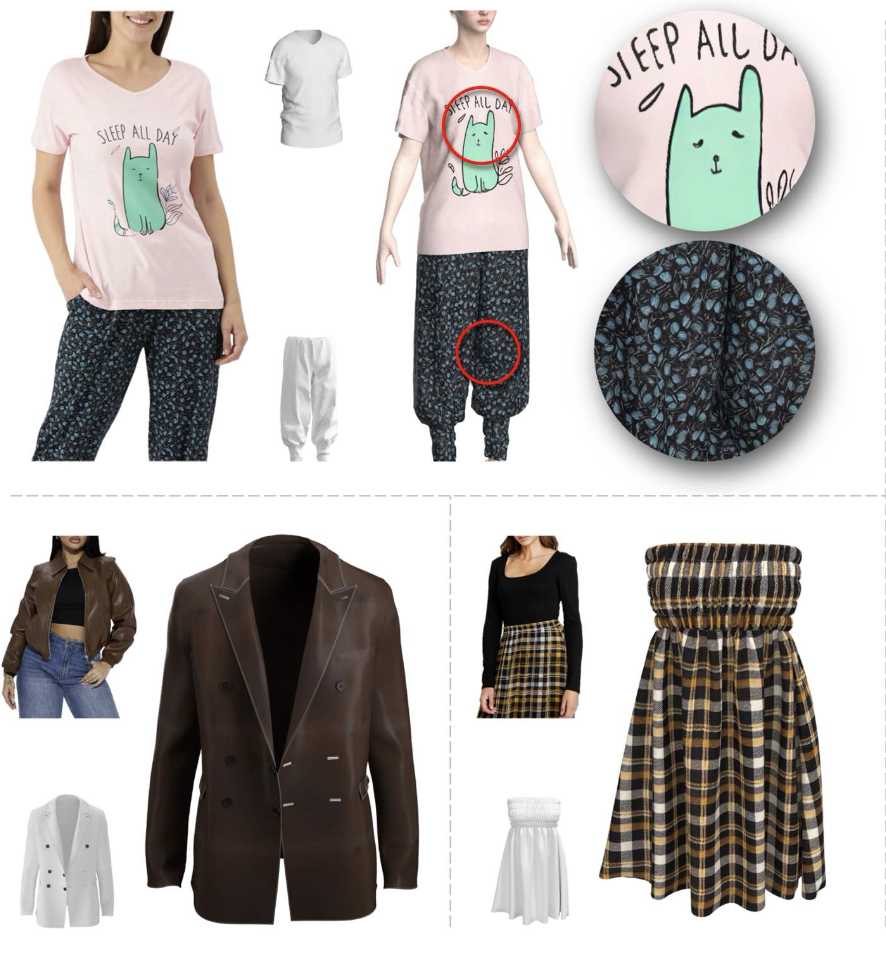
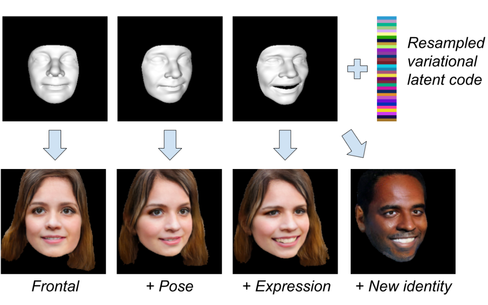

2025
-
Vector-Valued Monte Carlo Integration Using Ratio Control Variates
SIGGRAPH 2025 (Best Paper Award)Variance reduction techniques are widely used for reducing the noise of Monte Carlo integration. However, these techniques are typically designed with the assumption that the integrand is scalar-valued. Recognizing that rendering and inverse rendering broadly involve vector-valued integrands, we identify the limitations of classical variance reduction methods in this context. To address this, we introduce ratio control variates, an estimator that leverages a ratio-based approach instead of the conventional difference-based control variates. Our analysis and experiments demonstrate that ratio control variables can significantly reduce the mean squared error of vector-valued integration compared to existing methods and are broadly applicable to various rendering and inverse rendering tasks. -
TeGA: Texture Space Gaussian Avatars for High-Resolution DynamicHead Modeling
SIGGRAPH 2025Sparse volumetric reconstruction and rendering via 3D Gaussian splatting have recently enabled animatable 3D head avatars that are rendered under arbitrary viewpoints with impressive photorealism. Today, such photoreal avatars are seen as a key component in emerging applications in telepresence, extended reality, and entertainment. Building a photoreal avatar requires estimating the complex non-rigid motion of different facial components as seen on input video images; due to inaccurate motion estimation, animatable models typically present a loss of fidelity and detail when compared to their non-animatable counterparts, built from an individual facial expression. Also, recent state-of-the-art models are often affected by memory limitations that reduce the number of 3D Gaussians used for modeling, leading to lower detail and quality. To address these problems, we present a new high-detail 3D head avatar model that improves upon the state of the art, largely increasing the number of 3D Gaussians and modeling quality for rendering at 4K resolution. Our high-quality model is reconstructed from multiview input video and builds on top of a mesh-based 3D morphable model, which provides a coarse deformation layer for the head. Photoreal appearance is modelled by 3D Gaussians embedded within the continuous UVD tangent space of this mesh, allowing for more effective densification where most needed. Additionally, these Gaussians are warped by a novel UVD deformation field to capture subtle, localized motion. Our key contribution is the novel deformable Gaussian encoding and overall fitting procedure that allows our head model to preserve appearance detail, while capturing facial motion and other transient high-frequency features such as skin wrinkling. -
Practical Inverse Rendering of Textured and Translucent Appearance
SIGGRAPH 2025Inverse rendering has emerged as a standard tool to reconstruct the parameters of appearance models from images (e.g., textured BSDFs). In this work, we present several novel contributions motivated by the practical challenges of recovering high-resolution surface appearance textures, including spatially-varying subsurface scattering parameters. First, we propose Laplacian mipmapping, which combines differentiable mipmapping and a Laplacian pyramid representation into an effective preconditioner. This seemingly simple technique significantly improves the quality of recovered surface textures on a set of challenging inverse rendering problems. Our method automatically adapts to the render and texture resolutions, only incurs moderate computational cost and achieves better quality than prior work while using fewer hyperparameters. Second, we introduce a specialized gradient computation algorithm for textured, path-traced subsurface scattering, which facilitates faithful reconstruction of translucent materials. By using path tracing, we enable the recovery of complex appearance while avoiding the approximations of the previously used diffusion dipole methods. Third, we demonstrate the application of both these techniques to reconstructing the textured appearance of human faces from sparse captures. Our method recovers high-quality relightable appearance parameters that are compatible with current production renderers. -
Floor-aligned Representation for Avatar Motion from Egocentric Video
CVPR 2025 (Highlight)Egocentric motion capture with a head-mounted body-facing stereo camera is crucial for VR and AR applications but presents significant challenges such as heavy occlusions and limited annotated real-world data. Existing methods rely on synthetic pretraining and struggle to generate smooth and accurate predictions in real-world settings, particularly for lower limbs. Our work addresses these limitations by introducing a lightweight VR-based data collection setup with on-board, real-time 6D pose tracking. Using this setup, we collected the most extensive real-world dataset for ego-facing ego-mounted cameras to date in size and motion variability. Effectively integrating this multimodal input — device pose and camera feeds — is challenging due to the differing characteristics of each data source. To address this, we propose FRAME, a simple yet effective architecture that combines device pose and camera feeds for state-of-the-art body pose prediction through geometrically sound multimodal integration and can run at 300 FPS on modern hardware. Lastly, we showcase a novel training strategy to enhance the model’s generalization capabilities. Our approach exploits the problem’s geometric properties, yielding high-quality motion capture free from common artifacts in prior works. Qualitative and quantitative evaluations, along with extensive comparisons, demonstrate the effectiveness of our method. -

GroomLight: Hybrid Inverse Rendering for Relightable Human Hair Appearance Modeling
CVPR 2025We present GroomLight, a novel method for relightable hair appearance modeling from multi-view images. Existing hair capture methods struggle to balance photorealistic rendering with relighting capabilities. Analytical material models, while physically grounded, often fail to fully capture appearance details. Conversely, neural rendering approaches excel at view synthesis but generalize poorly to novel lighting conditions. GroomLight addresses this challenge by combining the strengths of both paradigms. It employs an extended hair BSDF model to capture primary light transport and a light-aware residual model to reconstruct the remaining details. We further propose a hybrid inverse rendering pipeline to optimize both components, enabling high-fidelity relighting, view synthesis, and material editing. Extensive evaluations on real-world hair data demonstrate state-of-the-art performance of our method. -
Gaussian Eigen Models for Human Heads
CVPR 2025Current personalized neural head avatars face a trade-off: lightweight models lack detail and realism, while high-quality, animatable avatars require significant computational resources, making them unsuitable for commodity devices. To address this gap, we introduce Gaussian Eigen Models (GEM), which provide high-quality, lightweight, and easily controllable head avatars. GEM utilizes 3D Gaussian primitives for representing the appearance combined with Gaussian splatting for rendering. Building on the success of mesh-based 3D morphable face models (3DMM), we define GEM as an ensemble of linear eigenbases for representing the head appearance of a specific subject. In particular, we construct linear bases to represent the position, scale, rotation, and opacity of the 3D Gaussians. This allows us to efficiently generate Gaussian primitives of a specific head shape by a linear combination of the basis vectors, only requiring a low-dimensional parameter vector that contains the respective coefficients. We propose to construct these linear bases (GEM) by distilling high-quality compute-intense CNN-based Gaussian avatar models that can generate expression-dependent appearance changes like wrinkles. These high-quality models are trained on multi-view videos of a subject and are distilled using a series of principal component analyses. Once we have obtained the bases that represent the animatable appearance space of a specific human, we learn a regressor that takes a single RGB image as input and predicts the low-dimensional parameter vector that corresponds to the shown facial expression. In a series of experiments, we compare GEM's self-reenactment and cross-person reenactment results to state-of-the-art 3D avatar methods, demonstrating GEM's higher visual quality and better generalization to new expressions. -
BimArt: A Unified Approach for the Synthesis of 3D Bimanual Interaction with Articulated Objects
CVPR 2025We present BimArt, a novel generative approach for synthesizing 3D bimanual hand interactions with articulated objects. Unlike prior works, we do not rely on a reference grasp, a coarse hand trajectory, or separate modes for grasping and articulating. To achieve this, we first generate distance-based contact maps conditioned on the object trajectory with an articulation-aware feature representation, revealing rich bimanual patterns for manipulation. The learned contact prior is then used to guide our hand motion generator, producing diverse and realistic bimanual motions for object movement and articulation. Our work offers key insights into feature representation and contact prior for articulated objects, demonstrating their effectiveness in taming the complex, high-dimensional space of bimanual hand-object interactions. Through comprehensive quantitative experiments, we demonstrate a clear step towards simplified and high-quality hand-object animations that excel over the state-of-the-art in motion quality and diversity. -
Ego4o: Egocentric Human Motion Capture and Understanding from Multi-Modal Input
CVPR 2025This work focuses on tracking and understanding human motion using consumer wearable devices, such as VR/AR headsets, smart glasses, cellphones, and smartwatches. These devices provide diverse, multi-modal sensor inputs, including egocentric images, and 1-3 sparse IMU sensors in varied combinations. Motion descriptions can also accompany these signals. The diverse input modalities and their intermittent availability pose challenges for consistent motion capture and understanding. In this work, we present Ego4o (o for omni), a new framework for simultaneous human motion capture and understanding from multi-modal egocentric inputs. This method maintains performance with partial inputs while achieving better results when multiple modalities are combined. First, the IMU sensor inputs, the optional egocentric image, and text description of human motion are encoded into the latent space of a motion VQ-VAE. Next, the latent vectors are sent to the VQ-VAE decoder and optimized to track human motion. When motion descriptions are unavailable, the latent vectors can be input into a multi-modal LLM to generate human motion descriptions, which can further enhance motion capture accuracy. Quantitative and qualitative evaluations demonstrate the effectiveness of our method in predicting accurate human motion and high-quality motion descriptions. -
SynShot - Synthetic Prior for Few-Shot Drivable Head Avatar Inversion
CVPR 2025We present SynShot, a novel method for the few-shot inversion of a drivable head avatar based on a synthetic prior. We tackle two major challenges. First, state-of-the-art monocular avatar models struggle to generalize to new views and expressions, lacking a strong prior and often overfitting to a specific viewpoint distribution. Second, training a controllable 3D generative network requires a large number of diverse sequences, for which pairs of images and high-quality tracked meshes are not always available. Moreover, under General Data Protection Regulation, the storage and use of real datasets are highly regulated. Users are often required to delete trained models and remove any derivatives of the real data within a specified time frame if a subject from the dataset withdraws their consent, as guaranteed by law. This process is very cumbersome from a data management perspective, whereas synthetic datasets are not subject to these regulations. -
VLMaterial: Procedural Material Generation with Large Vision-Language Models
ICLR 2025Procedural materials, represented as functional node graphs, are ubiquitous in computer graphics for photorealistic material appearance design. They allow users to perform intuitive and precise editing to achieve desired visual appearances. However, creating a procedural material given an input image requires professional knowledge and significant effort. In this work, we leverage the ability to convert procedural materials into standard Python programs and fine-tune a large pre-trained vision-language model (VLM) to generate such programs from input images. To enable effective fine-tuning, we also contribute an open-source procedural material dataset and propose to perform program-level augmentation by prompting another pre-trained large language model (LLM). Through extensive evaluation, we show that our method outperforms previous methods on both synthetic and real-world examples. -
Does 3D Gaussian Splatting Need Accurate Volumetric Rendering?
Eurographics 2025Since its introduction, 3D Gaussian Splatting (3DGS) has become an important reference method for learning 3D representations of a captured scene, allowing real-time novel-view synthesis with high visual quality and fast training times. Neural Radiance Fields (NeRFs), which preceded 3DGS, are based on a principled ray-marching approach for volumetric rendering. In contrast, while sharing a similar image formation model with NeRF, 3DGS uses a hybrid rendering solution that builds on the strengths of volume rendering and primitive rasterization. A crucial benefit of 3DGS is its performance, achieved through a set of approximations, in many cases with respect to volumetric rendering theory. A naturally arising question is whether replacing these approximations with more principled volumetric rendering solutions can improve the quality of 3DGS. In this paper, we present an in-depth analysis of the various approximations and assumptions used by the original 3DGS solution. We demonstrate that, while more accurate volumetric rendering can help for low numbers of primitives, the power of efficient optimization and the large number of Gaussians allows 3DGS to outperform volumetric rendering despite its approximations. -
Fusing 2D and 3D Features for Facial Skin Segmentation
Eurographics Shorts 2025Face registration deforms a template mesh to closely fit a 3D face scan, the quality of which commonly degrades in non-skin re- gions (e.g., hair, beard, accessories), because the optimized template-to-scan distance pulls the template mesh towards the noisy scan surface. Improving registration quality requires a clean separation of skin and non-skin regions on the scan mesh. Exist- ing image-based (2D) or scan-based (3D) segmentation methods however perform poorly. Image-based segmentation outputs multi-view inconsistent masks, and they cannot account for scan inaccuracies or scan-image misalignment, while scan-based methods suffer from lower spatial resolution compared to images. In this work, we introduce a novel method that accurately separates skin from non-skin geometry on 3D human head scans. For this, our method extracts features from multi-view images using a frozen image foundation model and aggregates these features in 3D. These lifted 2D features are then fused with 3D ge- ometric features extracted from the scan mesh, to then predict a segmentation mask directly on the scan mesh. We show that our segmentations improve the registration accuracy over pure 2D or 3D segmentation methods by 8.89% and 14.3%, respectively. Although trained only on synthetic data, our model generalizes well to real data.
2024
-
GroomCap: Prior-Free High-Quality Hair Capture
SIGASIA 2024 (Best Paper Award)Despite recent advances in multi-view hair reconstruction, achieving strand-level precision remains a significant challenge due to inherent limitations in existing capture pipelines. We introduce GroomCap, a novel multi-view hair capture method that reconstructs faithful and high-fidelity hair geometry without relying on external data priors. To address the limitations of conventional reconstruction algorithms, we propose a neural implicit representation for hair volume that encodes high-resolution 3D orientation and occupancy from input views. This implicit hair volume is trained with a new volumetric 3D orientation rendering algorithm, coupled with 2D orientation distribution supervision, to effectively prevent the loss of structural information caused by undesired orientation blending. We further propose a Gaussian-based hair optimization strategy to refine the traced hair strands with a novel chained Gaussian representation, utilizing direct photometric supervision from images. Our results demonstrate that GroomCap is able to capture high-quality hair geometries that are not only more precise and detailed than existing methods but also versatile enough for a range of applications. -

FabricDiffusion: High-Fidelity Texture Transfer for 3D Garments Generation from In-The-Wild Images
SIGASIA 2024We introduce FabricDiffuion, a method for transferring fabric textures from a single clothing image to 3D garments of arbitrary shapes. Existing approaches typically synthesize textures on the garment surface through 2D-to-3D texture mapping or depth-aware inpainting via generative models. Unfortunately, these methods often struggles at capturing and preserving texture details, particularly due to challenging occlusions, distortions, or poses in the input image. Inspired by the observation that in fashion industry most garments are constructed by stitching sewing patterns with flat, repeatable textures, we cast the task of clothing texture transfer as extracting distortion-free, tileable texture materials that are subsequently mapped onto the UV space of the garment. Building upon this insight, we train a denoising diffusion model with a large-scale synthetic dataset to rectify distortions in the input texture image. This process yields a flat texture map that enables a tight coupling with existing Physically-Based Rendering (PBR) material generation pipelines, allowing for realistic relighting of the garment under various lighting conditions. We show that FabricDiffusion can transfer a variety of features from a single clothing image including texture patterns, material properties, and detailed prints and logos. Extensive experiments demonstrate that our model significantly outperforms state-to-the-art methods on both synthetic data and real-world, in-the-wild clothing images while generalizing to unseen textures and garment shapes. -
EgoAvatar: Egocentric View-Driven and Photorealistic Full-body Avatars
SIGASIA 2024Immersive VR telepresence ideally means being able to interact and communicate with digital avatars that are indistinguishable from and precisely reflect the behaviour of their real counterparts. The core technical challenge is two fold: Creating a digital double that faithfully reflects the real human and tracking the real human solely from egocentric sensing devices that are lightweight and have a low energy consumption, e.g. a single RGB camera. Up to date, no unified solution to this problem exists as recent works solely focus on egocentric motion capture, only model the head, or build avatars from multi-view captures. In this work, we, for the first time in literature, propose a person-specific egocentric telepresence approach, which jointly models the photoreal digital avatar while also driving it from a single egocentric video. We first present a character model that is animatible, i.e. can be solely driven by skeletal motion, while being capable of modeling geometry and appearance. Then, we introduce a personalized egocentric motion capture component, which recovers full-body motion from an egocentric video. Finally, we apply the recovered pose to our character model and perform a test-time mesh refinement such that the geometry faithfully projects onto the egocentric view. To validate our design choices, we propose a new and challenging benchmark, which provides paired egocentric and dense multi-view videos of real humans performing various motions. Our experiments demonstrate a clear step towards egocentric and photoreal telepresence as our method outperforms baselines as well as competing methods. -
Cafca: High-quality Novel View Synthesis of Expressive Faces from Casual Few-shot Captures
SIGASIA 2024Volumetric modeling and neural radiance field representations have revolutionized 3D face capture and photorealistic novel view synthesis. However, these methods often require hundreds of multi-view input images and are thus inapplicable to cases with less than a handful of inputs. We present a novel volumetric prior on human faces that allows for high-fidelity expressive face modeling from as few as three input views captured in the wild. Our key insight is that an implicit prior trained on synthetic data alone can generalize to extremely challenging real-world identities and expressions and render novel views with fine idiosyncratic details like wrinkles and eyelashes. We leverage a 3D Morphable Face Model to synthesize a large training set, rendering each identity with different expressions, hair, clothing, and other assets. We then train a conditional Neural Radiance Field prior on this synthetic dataset and, at inference time, fine-tune the model on a very sparse set of real images of a single subject. On average, the fine-tuning requires only three inputs to cross the synthetic-to-real domain gap. The resulting personalized 3D model reconstructs strong idiosyncratic facial expressions and outperforms the state-of-the-art in high-quality novel view synthesis of faces from sparse inputs in terms of perceptual and photo-metric quality. -
Solving Inverse PDE Problems using Grid-Free Monte Carlo Estimators
SIGASIA 2024Partial differential equations can model diverse physical phenomena including heat diffusion, incompressible flows, and electrostatic potentials. Given a description of an object’s boundary and interior, traditional methods solve such PDEs by densely meshing the interior and then solving a large and sparse linear system derived from this mesh. Recent grid-free solvers take an alternative approach and avoid this complexity in exchange for randomness: they compute stochastic solution estimates and generally bear a striking resemblance to physically-based rendering algorithms. In this article, we develop algorithms targeting the inverse form of this problem: given an already existing solution of a PDE, we infer parameters characterizing the boundary and interior. In the grid-free setting, there are again significant connections to rendering, and we show how insights from both fields can be combined to compute unbiased derivative estimates that enable gradient-based optimization. In this process, we encounter new challenges that must be addressed to obtain practical solutions. We introduce acceleration and variance reduction strategies and show how to differentiate branching random walks in reverse mode. We finally demonstrate our approach on both simulated data and a real-world electrical impedance tomography experiment, where we reconstruct the position of a conducting object from voltage measurements taken in a saline-filled tank. -
PhysAvatar: Learning the Physics of Dressed 3D Avatars from Visual Observations
ECCV 2024We introduce PhysAvatar, a novel framework that combines inverse rendering with inverse physics to automatically estimate the shape and appearance of a human from multi-view video data along with the physical parameters of the fabric of their clothes. We adopt a mesh-aligned 4D Gaussian technique for spatio-temporal mesh tracking as well as a physically based inverse renderer to estimate the intrinsic material properties. PhysAvatar integrates a physics simulator to estimate the physical parameters of the garments using gradient-based optimization in a principled manner. These novel capabilities enable PhysAvatar to create high-quality novel-view renderings of avatars dressed in loose-fitting clothes under motions and lighting conditions not seen in the training data. -
MagicMirror: Fast and High-Quality Avatar Generation with a Constrained Search Space
ECCV 2024We introduce a novel framework for 3D human avatar generation and personalization, leveraging text prompts to enhance user engagement and customization. Central to our approach are key innovations aimed at overcoming the challenges in photo-realistic avatar synthesis. Firstly, we utilize a conditional Neural Radiance Fields (NeRF) model, trained on a large-scale unannotated multi-view dataset, to create a versatile initial solution space that accelerates and diversifies avatar generation. Secondly, we develop a geometric prior, leveraging the capabilities of Text-to-Image Diffusion Models, to ensure superior view invariance and enable direct optimization of avatar geometry. These foundational ideas are complemented by our optimization pipeline built on Variational Score Distillation (VSD), which mitigates texture loss and over-saturation issues. As supported by our extensive experiments, these strategies collectively enable the creation of custom avatars with unparalleled visual quality and better adherence to input text prompts. -

Gaussian3Diff: 3D Gaussian Diffusion for 3D Full Head Synthesis and Editing
ECCV 2024We present a novel framework for generating photorealistic 3D human head and subsequently manipulating and reposing them with remarkable flexibility. The proposed approach leverages an implicit function representation of 3D human heads, employing 3D Gaussians anchored on a parametric face model. To enhance representational capabilities and encode spatial information, we embed a lightweight tri-plane payload within each Gaussian rather than directly storing color and opacity. Additionally, we parameterize the Gaussians in a 2D UV space via a 3DMM, enabling effective utilization of the diffusion model for 3D head avatar generation. Our method facilitates the creation of diverse and realistic 3D human heads with fine-grained editing over facial features and expressions. Extensive experiments demonstrate the effectiveness of our method. -
MVDD: Multi-View Depth Diffusion Models
ECCV 2024Denoising diffusion models have demonstrated outstanding results in 2D image generation, yet it remains a challenge to replicate its success in 3D shape generation. In this paper, we propose leveraging multi-view depth, which represents complex 3D shapes in a 2D data format that is easy to denoise. We pair this representation with a diffusion model, MVDD, that is capable of generating high-quality dense point clouds with 20K+ points with fine-grained details. To enforce 3D consistency in multi-view depth, we introduce an epipolar line segment attention that conditions the denoising step for a view on its neighboring views. Additionally, a depth fusion module is incorporated into diffusion steps to further ensure the alignment of depth maps. When augmented with surface reconstruction, MVDD can also produce high-quality 3D meshes. Furthermore, MVDD stands out in other tasks such as depth completion, and can serve as a 3D prior, significantly boosting many downstream tasks, such as GAN inversion. State-of-the-art results from extensive experiments demonstrate MVDD's excellent ability in 3D shape generation, depth completion, and its potential as a 3D prior for downstream tasks. -
Nuvo: Neural UV Mapping for Unruly 3D Representations
ECCV 2024Existing UV mapping algorithms are designed to operate on well-behaved meshes, instead of the geometry representations produced by state-of-the-art 3D reconstruction and generation techniques. As such, applying these methods to the volume densities recovered by neural radiance fields and related techniques (or meshes triangulated from such fields) results in texture atlases that are too fragmented to be useful for tasks such as view synthesis or appearance editing. We present a UV mapping method designed to operate on geometry produced by 3D reconstruction and generation techniques. Instead of computing a mapping defined on a mesh's vertices, our method Nuvo uses a neural field to represent a continuous UV mapping, and optimizes it to be a valid and well-behaved mapping for just the set of visible points, i.e. only points that affect the scene's appearance. We show that our model is robust to the challenges posed by ill-behaved geometry, and that it produces editable UV mappings that can represent detailed appearance. -
Binary Opacity Grids: Capturing Fine Geometric Detail for Mesh-Based View Synthesis
ACM SIGGRAPH 2024While surface-based view synthesis algorithms are appealing due to their low computational requirements, they often struggle to reproduce thin structures. In contrast, more expensive methods that model the scene's geometry as a volumetric density field (e.g. NeRF) excel at reconstructing fine geometric detail. However, density fields often represent geometry in a "fuzzy" manner, which hinders exact localization of the surface. In this work, we modify density fields to encourage them to converge towards surfaces, without compromising their ability to reconstruct thin structures. First, we employ a discrete opacity grid representation instead of a continuous density field, which allows opacity values to discontinuously transition from zero to one at the surface. Second, we anti-alias by casting multiple rays per pixel, which allows occlusion boundaries and subpixel structures to be modelled without using semi-transparent voxels. Third, we minimize the binary entropy of the opacity values, which facilitates the extraction of surface geometry by encouraging opacity values to binarize towards the end of training. Lastly, we develop a fusion-based meshing strategy followed by mesh simplification and appearance model fitting. The compact meshes produced by our model can be rendered in real-time on mobile devices and achieve significantly higher view synthesis quality compared to existing mesh-based approaches. -
Lite2Relight: 3D-aware Single Image Portrait Relighting
ACM SIGGRAPH 2024Achieving photorealistic 3D view synthesis and relighting of human portraits is pivotal for advancing AR/VR applications. Existing methodologies in portrait relighting demonstrate substantial limitations in terms of generalization and 3D consistency, coupled with inaccuracies in physically realistic lighting and identity preservation. Furthermore, personalization from a single view is difficult. to achieve and often requires multiview images during the testing phase or involves slow optimization processes. This paper introduces Lite2Relight , a novel technique that can predict 3D consistent head poses of portraits while performing physically plausible light editing at interactive speed. Our method uniquely extends the generative capabilities and efficient volumetric representation of EG3D, leveraging a lightstage dataset to implicitly disentangle face reflectance and perform relighting under target HDRI environment maps. By utilizing a pre-trained geometry-aware encoder and a feature alignment module, we map input images into a relightable 3D space, enhancing them with a strong face geometry and reflectance prior. Through extensive quantitative and qualitative evaluations, we show that our method outperforms the state-of-the-art methods in terms of efficacy, photorealism, and practical application. This includes producing 3D-consistent results of the full head, including hair, eyes, and expressions. Lite2Relight paves the way for large scale adoption of photorealistic portrait editing in various domains, offering a robust, interactive solution to a previously constrained problem. -
DNO: Optimizing Diffusion Noise Can Serve As Universal Motion Priors
CVPR 2024We propose Diffusion Noise Optimization (DNO), a new method that effectively leverages existing motion diffusion models as motion priors for a wide range of motion-related tasks. Instead of training a task-specific diffusion model for each new task, DNO operates by optimizing the diffusion latent noise of an existing pre-trained text-to-motion model. Given the corresponding latent noise of a human motion, it propagates the gradient from the target criteria defined on the motion space through the whole denoising process to update the diffusion latent noise. As a result, DNO supports any use cases where criteria can be defined as a function of motion. In particular, we show that, for motion editing and control, DNO outperforms existing methods in both achieving the objective and preserving the motion content. DNO accommodates a diverse range of editing modes, including changing trajectory, pose, joint locations, or avoiding newly added obstacles. In addition, DNO is effective in motion denoising and completion, producing smooth and realistic motion from noisy and partial inputs. DNO achieves these results at inference time without the need for model retraining, offering great versatility for any defined reward or loss function on the motion representation. -
Egocentric Whole-Body Motion Capture with FisheyeViT and Diffusion-Based Motion Refinement
CVPR 2024In this work, we explore egocentric whole-body motion capture using a single fisheye camera, which simultaneously estimates human body and hand motion. This task presents significant challenges due to three factors, the lack of high-quality datasets, fisheye camera distortion, and human body self-occlusion. To address these challenges, we propose a novel approach that leverages FisheyeViT to extract fisheye image features, which are subsequently converted into pixel-aligned 3D heatmap representations for 3D human body pose prediction. For hand tracking, we incorporate dedicated hand detection and hand pose estimation networks for regressing 3D hand poses. Finally, we develop a diffusion-based whole-body motion prior model to refine the estimated whole-body motion while accounting for joint uncertainties. To train these networks, we collect a large synthetic dataset, EgoWholeBody, comprising 840,000 high-quality egocentric images captured across a diverse range of whole-body motion sequences. Quantitative and qualitative evaluations demonstrate the effectiveness of our method in producing high-quality whole-body motion estimates from a single egocentric camera. -

FaceFolds: Meshed Radiance Manifolds for Efficient Volumetric Rendering of Dynamic Faces
I3D 20243D rendering of dynamic face captures is a challenging problem, and it demands improvements on several fronts—photorealism, efficiency, compatibility, and configurability. We present a novel representation that enables high-quality volumetric rendering of an actor's dynamic facial performances with minimal compute and memory footprint. It runs natively on commodity graphics soft- and hardware, and allows for a graceful trade-off between quality and efficiency. Our method utilizes recent advances in neural rendering, particularly learning discrete radiance manifolds to sparsely sample the scene to model volumetric effects. We achieve efficient modeling by learning a single set of manifolds for the entire dynamic sequence, while implicitly modeling appearance changes as temporal canonical texture. We export a single layered mesh and view-independent RGBA texture video that is compatible with legacy graphics renderers without additional ML integration. We demonstrate our method by rendering dynamic face captures of real actors in a game engine, at comparable photorealism to state-of-the-art neural rendering techniques at previously unseen frame rates. -
Learning to Stabilize Faces
EUROGRAPHICS 2024Modern facial scanning produces high-quality meshes but often requires subsequent stabilization to remove rigid head movement. This is crucial for game or movie character development where deformation due to expressions need be isolated from global head motion. Manual stabilization is tedious, leading to automated attempts. However, existing methods are flawed, requiring manual input, being imprecise, slow, or needing temporally consistent data. We propose a new learning-based approach which is precise and fully automatic. We frame stabilization as regression, use a 3DMM for training data generation and predict rigid transforms stabilizing pairs of misaligned face meshes. Experiments confirm our method's effectiveness for both random expression sets and facial performances. -
GANtlitz: Ultra High Resolution Generative Model for Multi-Modal Face Textures
EUROGRAPHICS 2024High-resolution texture maps are essential to render photoreal digital humans for visual effects or to generate data for machine learning. The acquisi- tion of high resolution assets at scale is cumbersome, it involves enrolling a large number of human subjects, using expensive multi-view camera setups, and significant manual artistic effort to align the textures. To alleviate these problems, we introduce GANtlitz, a generative model that can synthesize multi-modal ultra-high-resolution face appearance maps for novel identities. Our method solves three distinct challenges: 1) unavailability of a very large data corpus generally required for training generative models, 2) memory and computational limitations of training a GAN at ultra-high resolutions, and 3) consistency of appearance features such as skin color, pores and wrinkles in high-resolution textures across different modalities. We introduce dual-style blocks, an extension to the style blocks of the StyleGAN2 architecture, which improve multi-modal synthesis. Our patch-based architecture is trained only on image patches obtained from a small set of face textures (<100) and yet allows us to generate seamless appearance maps of novel identities at 6𝑘 × 4𝑘 resolution. Extensive qualitative and quantitative evaluations and baseline comparisons show the efficacy of our proposed system. -
ShellNeRF: Learning a Controllable High-resolution Model of the Eye and Periocular Region
EUROGRAPHICS 2024Eye gaze and expressions are crucial non-verbal signals in face-to-face communication. Visual effects and telepresence demand significant improvements in personalized tracking, animation, and synthesis of the eye region to achieve true immersion. Morphable face models, in combination with coordinate-based neural volumetric representations, show promise in solving the difficult problem of reconstructing intricate geometry (eyelashes) and synthesizing photorealistic appearance variations (wrinkles and specularities) of eye performances. We propose a novel hybrid representation - ShellNeRF - that builds a discretized volume around a 3DMM face mesh using concentric surfaces to model the deformable ‘periocular’ region. We define a canonical space using the UV layout of the shells that constrains the space of dense correspondence search. Combined with an explicit eyeball mesh for modeling corneal light-transport, our model allows for animatable photorealistic 3D synthesis of the whole eye region. Using multi-view video input, we demonstrate significant improvements over state-of-the-art in expression re-enactment and transfer for high-resolution close-up views of the eye region. -

MACS: Mass Conditioned 3D Hand and Object Motion Synthesis
3DV 2024The physical properties of an object, such as mass, significantly affect how we manipulate it with our hands. Surprisingly, this aspect has so far been neglected in prior work on 3D motion synthesis. To improve the naturalness of the synthesized 3D hand-object motions, this work proposes MACS---the first MAss Conditioned 3D hand and object motion Synthesis approach. Our approach is based on cascaded diffusion models and generates interactions that plausibly adjust based on the object's mass and interaction type. MACS also accepts a manually drawn 3D object trajectory as input and synthesizes the natural 3D hand motions conditioned by the object's mass. This flexibility enables MACS to be used for various downstream applications, such as generating synthetic training data for ML tasks, fast animation of hands for graphics workflows, and generating character interactions for computer games. We show experimentally that a small-scale dataset is sufficient for MACS to reasonably generalize across interpolated and extrapolated object masses unseen during the training. Furthermore, MACS shows moderate generalization to unseen objects, thanks to the mass-conditioned contact labels generated by our surface contact synthesis model ConNet. Our comprehensive user study confirms that the synthesized 3D hand-object interactions are highly plausible and realistic. -

Efficient 3D GANs with Layered Surface Volumes
3DV 2024Access to high-quality and diverse 3D articulated digital human assets is crucial in various applications, ranging from virtual reality to social platforms. Generative approaches, such as 3D generative adversarial networks (GANs), are rapidly replacing laborious manual content creation tools. However, existing 3D GAN frameworks typically rely on scene representations that leverage either template meshes, which are fast but offer limited quality, or volumes, which offer high capacity but are slow to render, thereby limiting the 3D fidelity in GAN settings. In this work, we introduce layered surface volumes (LSVs) as a new 3D object representation for articulated digital humans. LSVs represent a human body using multiple textured mesh layers around a conventional template. These layers are rendered using alpha compositing with fast differentiable rasterization, and they can be interpreted as a volumetric representation that allocates its capacity to a manifold of finite thickness around the template. Unlike conventional single-layer templates that struggle with representing fine off-surface details like hair or accessories, our surface volumes naturally capture such details. LSVs can be articulated, and they exhibit exceptional efficiency in GAN settings, where a 2D generator learns to synthesize the RGBA textures for the individual layers. Trained on unstructured, single-view 2D image datasets, our LSV-GAN generates high-quality and view-consistent 3D articulated digital humans without the need for view-inconsistent 2D upsampling networks.
2023
-

LitNeRF: Intrinsic Radiance Decomposition for High-Quality View Synthesis and Relighting of Faces
SIGGRAPH Asia 2023High-fidelity, photorealistic 3D capture of a human face is a long-standing problem in computer graphics -- the complex material of skin, intricate geometry of hair, and fine scale textural details make it challenging. Traditional techniques rely on very large and expensive capture rigs to reconstruct explicit mesh geometry and appearance maps and require complex differentiable path-tracing to achieve photorealistic results. More recent volumetric methods (\eg, NeRFs) have enabled view-synthesis and sometimes relighting by learning an implicit representation of the density and reflectance basis, but suffer from artifacts and blurriness due to the inherent ambiguities in volumetric modeling. These problems are further exacerbated when capturing with few cameras and light sources. We present a novel technique for high-quality capture of a human face for 3D view synthesis and relighting using a sparse, compact capture rig consisting of 15 cameras and 15 lights. Our method combines a volumetric representation of the face reflectance with traditional multi-view stereo based geometry reconstruction. The proxy geometry allows us to anchor the 3D density field to prevent artifacts and guide the disentanglement of intrinsic radiance components of the face appearance such as diffuse and specular reflectance, and Direct Light Transport (shadowing) fields. Our hybrid representation significantly improves the state-of-the-art quality for arbitrarily dense renders of a face from desired camera viewpoint as well as environmental, directional, and near-field lighting. -
GroomGen: A High-Quality Generative Hair Model Using Hierarchical Latent Representations
SIGGRAPH Asia 2023Despite recent successes in hair acquisition that fits a high-dimensional hair model to a specific input subject, generative hair models, which establish general embedding spaces for encoding, editing, and sampling diverse hairstyles, are way less explored. In this paper, we present GroomGen, the first generative model designed for hair geometry composed of highly-detailed dense strands. Our approach is motivated by two key ideas. First, we construct hair latent spaces covering both individual strands and hairstyles. The latent spaces are compact, expressive, and well-constrained for high-quality and diverse sampling. Second, we adopt a hierarchical hair representation that parameterizes a complete hair model to three levels: single strands, sparse guide hairs, and complete dense hairs. This representation is critical to the compactness of latent spaces, the robustness of training, and the efficiency of inference. Based on this hierarchical latent representation, our proposed pipeline consists of a strand-VAE and a hairstyle-VAE that encode an individual strand and a set of guide hairs to their respective latent spaces, a hybrid densification step that populates sparse guide hairs to a dense hair model, and a neural simulator that deforms hair driven by head pose. GroomGen not only enables novel hairstyle sampling and plausible hairstyle interpolation, but could also enable interactive editing of complex hairstyles, or serve as strong data-driven prior for hairstyle reconstruction from images. We demonstrate the superiority of our approach with qualitative examples of diverse sampled hairstyles and quantitative evaluation of generation quality regarding every single component and the entire pipeline. -

Preface: A Data-driven Volumetric Prior for Few-shot Ultra High-resolution Face Synthesis
ICCV 2023NeRFs have enabled highly realistic synthesis of human faces including complex appearance and reflectance effects of hair and skin. These methods typically require a large number of multi-view input images, making the process hardware intensive and cumbersome, limiting applicability to unconstrained settings. We propose a novel volumetric human face prior that enables the synthesis of ultra high-resolution novel views of subjects that are not part of the prior's training distribution. This prior model consists of an identity-conditioned NeRF, trained on a dataset of low-resolution multi-view images of diverse humans with known camera calibration. A simple sparse landmark-based 3D alignment of the training dataset allows our model to learn a smooth latent space of geometry and appearance despite a limited number of training identities. A high-quality volumetric representation of a novel subject can be obtained by model fitting to 2 or 3 camera views of arbitrary resolution. Importantly, our method requires as few as two views of casually captured images as input at inference time. -

NeRF-GAN Distillation for Efficient 3D-Aware Generation with Convolutions
ICCV 2023Pose-conditioned convolutional generative models struggle with high-quality 3D-consistent image generation from single-view datasets, due to their lack of sufficient 3D priors. Recently, the integration of Neural Radiance Fields (NeRFs) and generative models, such as Generative Adversarial Networks (GANs), has transformed 3D-aware generation from single-view images. NeRF-GANs exploit the strong inductive bias of 3D neural representations and volumetric rendering at the cost of higher computational complexity. This study aims at revisiting pose-conditioned 2D GANs for efficient 3D-aware generation at inference time by distilling 3D knowledge from pretrained NeRF-GANS. We propose a simple and effective method, based on re-using the well-disentangled latent space of a pre-trained NeRF-GAN in a pose-conditioned convolutional network to directly generate 3D-consistent images corresponding to the underlying 3D representations. Experiments on several datasets demonstrate that the proposed method obtains results comparable with volumetric rendering in terms of quality and 3D consistency while benefiting from the superior computational advantage of convolutional networks. -

Spectral Graphormer: Spectral Graph-based Transformer for Egocentric Two-Hand Reconstruction using Multi-View Color Images
ICCV 2023We propose a novel transformer-based framework that reconstructs two high fidelity hands from multi-view RGB images. Unlike existing hand pose estimation methods, where one typically trains a deep network to regress hand model parameters from single RGB image, we consider a more challenging problem setting where we directly regress the absolute root poses of two-hands with extended forearm at high resolution from egocentric view. As existing datasets are either infeasible for egocentric viewpoints or lack background variations, we create a large-scale synthetic dataset with diverse scenarios and collect a real dataset from multi-calibrated camera setup to verify our proposed multi-view image feature fusion strategy. To make the reconstruction physically plausible, we propose two strategies: (i) a coarse-to-fine spectral graph convolution decoder to smoothen the meshes during upsampling and (ii) an optimisation-based refinement stage at inference to prevent self-penetrations. Through extensive quantitative and qualitative evaluations, we show that our framework is able to produce realistic two-hand reconstructions and demonstrate the generalisation of synthetic-trained models to real data, as well as real-time AR/VR applications. -
DIMOS: Synthesizing Diverse Human Motions in 3D Indoor Scenes
ICCV 2023We present a novel method for populating 3D indoor scenes with virtual humans that can navigate in the environment and interact with objects in a realistic manner. Existing approaches rely on training sequences that contain captured human motions and the 3D scenes they interact with. However, such interaction data are costly, difficult to capture, and can hardly cover all plausible human-scene interactions in complex environments. To address these challenges, we propose a reinforcement learning-based approach that enables virtual humans to navigate in 3D scenes and interact with objects realistically and autonomously, driven by learned motion control policies. The motion control policies employ latent motion action spaces, which correspond to realistic motion primitives and are learned from large-scale motion capture data using a powerful generative motion model. For navigation in a 3D environment, we propose a scene-aware policy with novel state and reward designs for collision avoidance. Combined with navigation mesh-based path-finding algorithms to generate intermediate waypoints, our approach enables the synthesis of diverse human motions navigating in 3D indoor scenes and avoiding obstacles. To generate fine-grained human-object interactions, we carefully curate interaction goal guidance using a marker-based body representation and leverage features based on the signed distance field (SDF) to encode human-scene proximity relations. Our method can synthesize realistic and diverse human-object interactions (e.g.,~sitting on a chair and then getting up) even for out-of-distribution test scenarios with different object shapes, orientations, starting body positions, and poses. Experimental results demonstrate that our approach outperforms state-of-the-art methods in terms of both motion naturalness and diversity. -

ITI-GEN: Inclusive Text-to-Image Generation
ICCV 2023 (Oral, Best Paper Finalist)Text-to-image generative models often reflect the biases of the training data, leading to unequal representations of underrepresented groups. This study investigates inclusive text-to-image generative models that generate images based on human-written prompts and ensure the resulting images are uniformly distributed across attributes of interest. Unfortunately, directly expressing the desired attributes in the prompt often leads to sub-optimal results due to linguistic ambiguity or model misrepresentation. Hence, this paper proposes a drastically different approach that adheres to the maxim that "a picture is worth a thousand words". We show that, for some attributes, images can represent concepts more expressively than text. For instance, categories of skin tones are typically hard to specify by text but can be easily represented by example images. Building upon these insights, we propose a novel approach, ITI-GEN, that leverages readily available reference images for Inclusive Text-to-Image GENeration. The key idea is learning a set of prompt embeddings to generate images that can effectively represent all desired attribute categories. More importantly, ITI-GEN requires no model fine-tuning, making it computationally efficient to augment existing text-to-image models. Extensive experiments demonstrate that ITI-GEN largely improves over state-of-the-art models to generate inclusive images from a prompt. -

Drag Your GAN: Interactive Point-based Manipulation on the Generative Image Manifold
SIGGRAPH 2023Synthesizing visual content that meets users' needs often requires flexible and precise controllability of the pose, shape, expression, and layout of the generated objects. Existing approaches gain controllability of generative adversarial networks (GANs) via manually annotated training data or a prior 3D model, which often lack flexibility, precision, and generality. In this work, we study a powerful yet much less explored way of controlling GANs, that is, to "drag" any points of the image to precisely reach target points in a user-interactive manner, as shown in Fig.1. To achieve this, we propose DragGAN, which consists of two main components including: 1) a feature-based motion supervision that drives the handle point to move towards the target position, and 2) a new point tracking approach that leverages the discriminative GAN features to keep localizing the position of the handle points. Through DragGAN, anyone can deform an image with precise control over where pixels go, thus manipulating the pose, shape, expression, and layout of diverse categories such as animals, cars, humans, landscapes, etc. As these manipulations are performed on the learned generative image manifold of a GAN, they tend to produce realistic outputs even for challenging scenarios such as hallucinating occluded content and deforming shapes that consistently follow the object's rigidity. Both qualitative and quantitative comparisons demonstrate the advantage of DragGAN over prior approaches in the tasks of image manipulation and point tracking. We also showcase the manipulation of real images through GAN inversion. -
Scene-aware Egocentric 3D Human Pose Estimation
CVPR 2023Egocentric 3D human pose estimation with a single head-mounted fisheye camera has recently attracted attention due to its numerous applications in virtual and augmented reality. Existing methods still struggle in challenging poses where the human body is highly occluded or is closely interacting with the scene. To address this issue, we propose a scene-aware egocentric pose estimation method that guides the prediction of the egocentric pose with scene constraints. To this end, we propose an egocentric depth estimation network to predict the scene depth map from a wide-view egocentric fisheye camera while mitigating the occlusion of the human body with a depth-inpainting network. Next, we propose a scene-aware pose estimation network that projects the 2D image features and estimated depth map of the scene into a voxel space and regresses the 3D pose with a V2V network. The voxel-based feature representation provides the direct geometric connection between 2D image features and scene geometry, and further facilitates the V2V network to constrain the predicted pose based on the estimated scene geometry. To enable the training of the aforementioned networks, we also generated a synthetic dataset, called EgoGTA, and an in-the-wild dataset based on EgoPW, called EgoPW-Scene. The experimental results of our new evaluation sequences show that the predicted 3D egocentric poses are accurate and physically plausible in terms of human-scene interaction, demonstrating that our method outperforms the state-of-the-art methods both quantitatively and qualitatively. -

MonoAvatar: Learning Personalized High Quality Volumetric Head Avatars from Monocular RGB Videos
CVPR 2023We propose a method to learn a high-quality implicit 3D head avatar from a monocular RGB video captured in the wild. The learnt avatar is driven by a parametric face model to achieve user-controlled facial expressions and head poses. Our hybrid pipeline combines the geometry prior and dynamic tracking of a 3DMM with a neural radiance field to achieve fine-grained control and photorealism. To reduce over-smoothing and improve out-of-model expressions synthesis, we propose to predict local features anchored on the 3DMM geometry. These learnt features are driven by 3DMM deformation and interpolated in 3D space to yield the volumetric radiance at a designated query point. We further show that using a Convolutional Neural Network in the UV space is critical in incorporating spatial context and producing representative local features. Extensive experiments show that we are able to reconstruct high-quality avatars, with more accurate expression-dependent details, good generalization to out-of-training expressions, and quantitatively superior renderings compared to other state-of-the-art approaches.
2022
-

EyeNeRF: A Hybrid Representation for Photorealistic Synthesis, Animation and Relighting of Human Eyes
SIGGRAPH 2022A unique challenge in creating high-quality animatable and relightable 3D avatars of real people is modeling human eyes, particularly in conjunction with the surrounding periocular face region. The challenge of synthesizing eyes is multifold as it requires 1) appropriate representations for the various components of the eye and the periocular region for coherent viewpoint synthesis, capable of representing diffuse, refractive and highly reflective surfaces, 2) disentangling skin and eye appearance from environmental illumination such that it may be rendered under novel lighting conditions, and 3) capturing eyeball motion and the deformation of the surrounding skin to enable re-gazing. These challenges have traditionally necessitated the use of expensive and cumbersome capture setups to obtain high-quality results, and even then, modeling of the full eye region holistically has remained elusive. We present a novel geometry and appearance representation that enables high-fidelity capture and photorealistic animation, view synthesis and relighting of the eye region using only a sparse set of lights and cameras. Our hybrid representation combines an explicit parametric surface model for the eyeball surface with implicit deformable volumetric representations for the periocular region and the interior of the eye. This novel hybrid model has been designed specifically to address the various parts of that exceptionally challenging facial area - the explicit eyeball surface allows modeling refraction and high frequency specular reflection at the cornea, whereas the implicit representation is well suited to model lower frequency skin reflection via spherical harmonics and can represent non-surface structures such as hair (i.e. eyebrows) or highly diffuse volumetric bodies (i.e. sclera), both of which are a challenge for explicit surface models. Tightly integrating the two representations in a joint framework allows controlled photoreal image synthesis and joint optimization of both the geometry parameters of the eyeball and the implicit neural network in continuous 3D space. We show that for high-resolution close-ups of the human eye, our model can synthesize high-fidelity animated gaze from novel views under unseen illumination conditions, allowing to generate visually rich eye imagery. -
VoLux-GAN: A Generative Model for 3D Face Synthesis with HDRI Relighting
SIGGRAPH 2022We propose VoLux-GAN, a generative framework to synthesize 3D-aware faces with convincing relighting. Our main contribution is a volumetric HDRI relighting method that can efficiently accumulate albedo, diffuse and specular lighting contributions along each 3D ray for any desired HDR environmental map. Additionally, we show the importance of supervising the image decomposition process using multiple discriminators. In particular, we propose a data augmentation technique that leverages recent advances in single image portrait relighting to enforce consistent geometry, albedo, diffuse and specular components. Multiple experiments and comparisons with other generative frameworks show how our model is a step forward towards photorealistic relightable generative models. -
COINS: Compositional Human-Scene Interaction Synthesis with Semantic Control
ECCV 2022The physical properties of an object, such as mass, significantly affect how we manipulate it with our hands. Surprisingly, this aspect has so far been neglected in prior work on 3D motion synthesis. To improve the naturalness of the synthesized 3D hand-object motions, this work proposes MACS---the first MAss Conditioned 3D hand and object motion Synthesis approach. Our approach is based on cascaded diffusion models and generates interactions that plausibly adjust based on the object's mass and interaction type. MACS also accepts a manually drawn 3D object trajectory as input and synthesizes the natural 3D hand motions conditioned by the object's mass. This flexibility enables MACS to be used for various downstream applications, such as generating synthetic training data for ML tasks, fast animation of hands for graphics workflows, and generating character interactions for computer games. We show experimentally that a small-scale dataset is sufficient for MACS to reasonably generalize across interpolated and extrapolated object masses unseen during the training. Furthermore, MACS shows moderate generalization to unseen objects, thanks to the mass-conditioned contact labels generated by our surface contact synthesis model ConNet. Our comprehensive user study confirms that the synthesized 3D hand-object interactions are highly plausible and realistic. -
HandFlow: Quantifying View-Dependent 3D Ambiguity in Two-Hand Reconstruction with Normalizing Flow
VMV 2022Reconstructing two-hand interactions from a single image is a challenging problem due to ambiguities that stem from projective geometry and heavy occlusions. Existing methods are designed to estimate only a single pose, despite the fact that there exist other valid reconstructions that fit the image evidence equally well. In this paper we propose to address this issue by explicitly modeling the distribution of plausible reconstructions in a conditional normalizing flow framework. This allows us to directly supervise the posterior distribution through a novel determinant magnitude regularization, which is key to varied 3D hand pose samples that project well into the input image. We also demonstrate that metrics commonly used to assess reconstruction quality are insufficient to evaluate pose predictions under such severe ambiguity. To address this, we release the first dataset with multiple plausible annotations per image called MultiHands. The additional annotations enable us to evaluate the estimated distribution using the maximum mean discrepancy metric. Through this, we demonstrate the quality of our probabilistic reconstruction and show that explicit ambiguity modeling is better-suited for this challenging problem.
2021
-

VariTex: Variational Neural Face Textures
ICCV 2021Deep generative models can synthesize photorealistic images of human faces with novel identities. However, a key challenge to the wide applicability of such techniques is to provide independent control over semantically meaningful parameters: appearance, head pose, face shape, and facial expressions. In this paper, we propose VariTex - to the best of our knowledge the first method that learns a variational latent feature space of neural face textures, which allows sampling of novel identities. We combine this generative model with a parametric face model and gain explicit control over head pose and facial expressions. To generate complete images of human heads, we propose an additive decoder that adds plausible details such as hair. A novel training scheme enforces a pose-independent latent space and in consequence, allows learning a one-to-many mapping between latent codes and pose-conditioned exterior regions. The resulting method can generate geometrically consistent images of novel identities under fine-grained control over head pose, face shape, and facial expressions. This facilitates a broad range of downstream tasks, like sampling novel identities, changing the head pose, expression transfer, and more. -
EventHands: Real-Time Neural 3D Hand Pose Estimation from an Event Stream
ICCV 20213D hand pose estimation from monocular videos is a long-standing and challenging problem, which is now seeing a strong upturn. In this work, we address it for the first time using a single event camera, i.e., an asynchronous vision sensor reacting on brightness changes. Our EventHands approach has characteristics previously not demonstrated with a single RGB or depth camera such as high temporal resolution at low data throughputs and real-time performance at 1000 Hz. Due to the different data modality of event cameras compared to classical cameras, existing methods cannot be directly applied to and re-trained for event streams. We thus design a new neural approach which accepts a new event stream representation suitable for learning, which is trained on newly-generated synthetic event streams and can generalise to real data. Experiments show that EventHands outperforms recent monocular methods using a colour (or depth) camera in terms of accuracy and its ability to capture hand motions of unprecedented speed. Our method, the event stream simulator and the dataset are publicly available. -
Deep Physics-aware Inference of Cloth Deformation for Monocular Human Performance Capture
3DV 2021Recent monocular human performance capture approaches have shown compelling dense tracking results of the full body from a single RGB camera. However, existing methods either do not estimate clothing at all or model cloth deformation with simple geometric priors instead of taking into account the underlying physical principles. This leads to noticeable artifacts in their reconstructions, \eg baked-in wrinkles, implausible deformations that seemingly defy gravity, and intersections between cloth and body. To address these problems, we propose a person-specific, learning-based method that integrates a simulation layer into the training process to provide for the first time physics supervision in the context of weakly supervised deep monocular human performance capture. We show how integrating physics into the training process improves the learned cloth deformations, allows modeling clothing as a separate piece of geometry, and largely reduces cloth-body intersections. Relying only on weak 2D multi-view supervision during training, our approach leads to a significant improvement over current state-of-the-art methods and is thus a clear step towards realistic monocular capture of the entire deforming surface of a clothed human.
2020
-

Deep Relightable Textures
SIGGRAPH Asia 2020The increasing demand for 3D content in augmented and virtual reality has motivated the development of volumetric performance capture systems such as the Light Stage. Recent advances are pushing free viewpoint relightable videos of dynamic human performances closer to photorealistic quality. However, despite significant efforts, these sophisticated systems are limited by reconstruction and rendering algorithms which do not fully model complex 3D structures and higher order light transport effects such as global illumination and sub-surface scattering. In this paper, we propose a system that combines traditional geometric pipelines with a neural rendering scheme to generate photorealistic renderings of dynamic performances under desired viewpoint and lighting. Our system leverages deep neural networks that model the classical rendering process to learn implicit features that represent the view-dependent appearance of the subject independent of the geometry layout, allowing for generalization to unseen subject poses and even novel subject identity. Detailed experiments and comparisons demonstrate the efficacy and versatility of our method to generate high-quality results, significantly outperforming the existing state-of-the-art solutions.